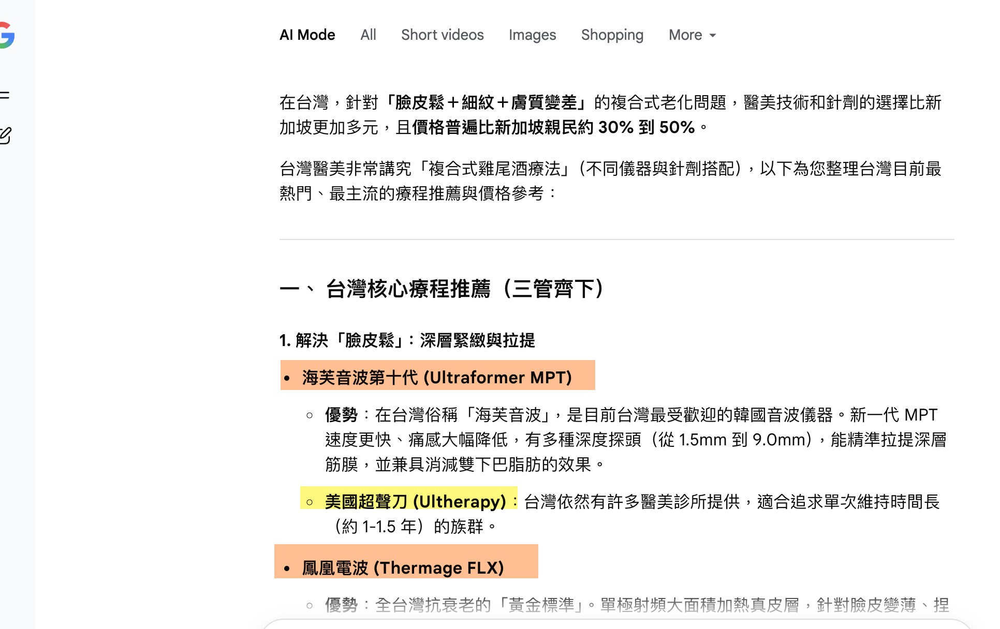
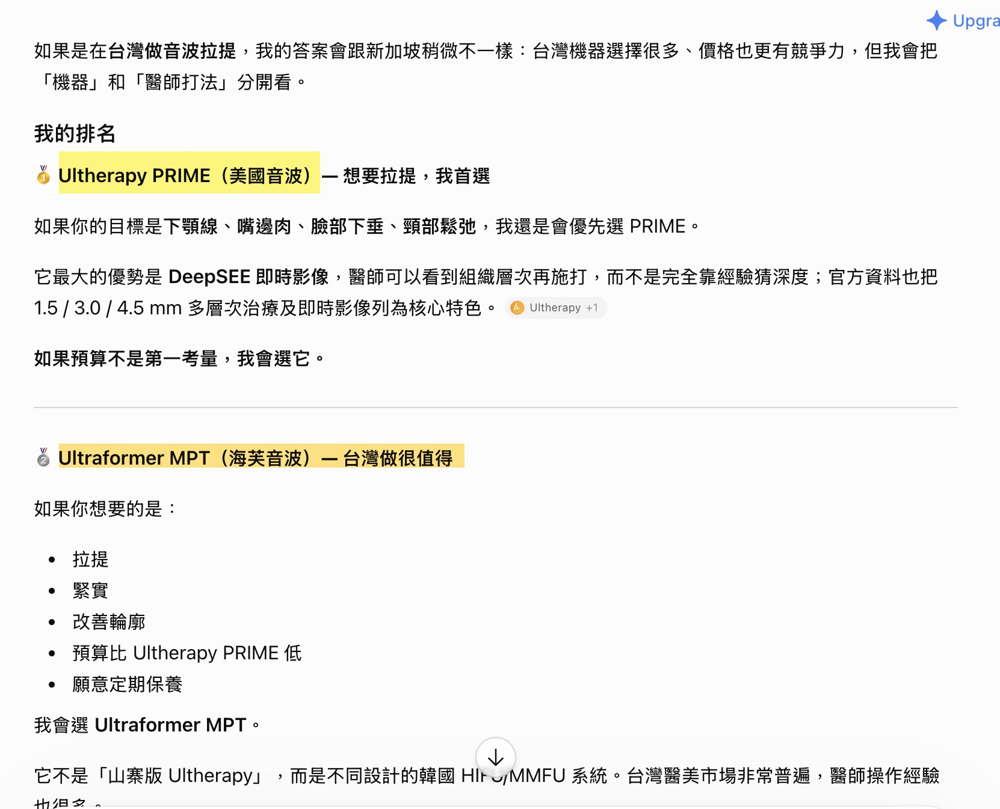
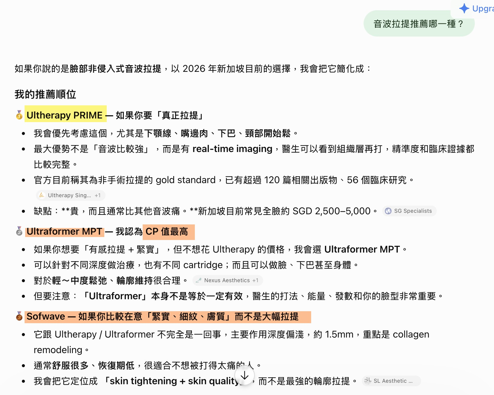
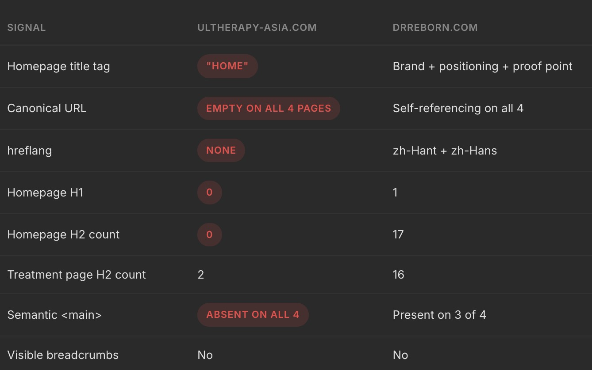
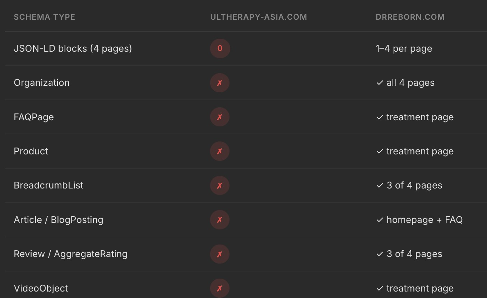

Ultherapy is already known across Asia. The task now is to be the source the answer is built from — in search, and in the AI answers where the treatment decision is made.
Section 01
Not how to be found. Ultherapy is already known. The question is how to become the authority the answer is assembled from — across owned media, earned media, and the AI answers that now sit on top of both.
Five markets: Singapore, Thailand, Australia, Taiwan, Hong Kong
02 / 23
The question / Starting position
DataForSEO Labs, 6,167 deduplicated queries, re-pulled 25 Aug 2026 · citation rates: ChatGPT, 252 answers, 25 Aug. Only ChatGPT measured — other assistants shown as destinations.
03 / 23
The question / What it looks like
Taiwan
Google AI Mode

Ultraformer MPT listed first. Ultherapy appears second, as 美國超聲刀.
Taiwan
ChatGPT

Ultherapy PRIME ranked #1 — 我首選. Ultraformer second, on value.
Singapore
ChatGPT

Ultherapy PRIME #1, but flagged 貴 — SGD 2,500–5,000. Sofwave third.
Live answers captured 25 Aug 2026. The ranking changes with the destination, not with the market.
04 / 23
The question / Why now
“Humans will be a rounding error on the internet.”
Machine and agentic traffic could run 1,000× human traffic within five years.
One person comparing treatments might open five clinic sites. An agent doing it for them opens thousands. The reader you are optimising for has already changed.
Paste the chart or figures here.
Replace this box with an image at
assets/why-now-data.png, or tell me the numbers and I will build it natively.
Cloudflare Q2 2026 earnings call, Aug 2026, widely reported. Seifert noted his own forecasts have been wrong before — the 1,000× figure is a prediction; the May 2026 crossover is measured.
05 / 23
The question / Defining the win
When you are not the source, you have no control over how you are recommended. Being named is not the same as being recommended.
Semantic HTML, product schema resolving to Merz, one consolidated destination. Today: four properties, four authority pools.
Build definitional, comparison, safety, indication and clinical publication content written as answers — structured so an engine can lift them.
Clinics, medical bodies and journals carry their own authority and are cited today where Merz is not. Supply the facts they publish.
An engine builds its answer from machine-readable owned content and the third-party sources it trusts. Win all three and you are in the answer. Win none and you are absent at the moment of decision.
Framework. Citation figures: ChatGPT, 207 unbranded answers across SG, TW and HK, 25 Aug 2026.
06 / 23
The question / What winning takes
Semantic HTML, correct heading hierarchy, product schema resolving to Merz. Today: no H1 on the homepage, empty canonicals, zero JSON-LD.
Owned media. Definitional, comparison, safety and indication content written as answers — and marked up so an engine can lift them.
Clinics, medical bodies and journals are the sources today. PubMed alone is cited 165 times. Merz is not in that layer.
Citation rates: ChatGPT, 207 unbranded answers across Singapore, Taiwan and Hong Kong, 25 Aug 2026.
07 / 23
Where you stand / By decision stage
Unbranded questions only. Named — the brand appears in the answer.
ChatGPT via DataForSEO llm_scraper, k=3 pulls per prompt, 25 Aug 2026. 207 unbranded answers across Singapore, Taiwan and Hong Kong. BOFU is the smallest cell at n=36 — directional, not precise.
08 / 23
Where you stand / The measured gap
When the buyer already has Ultherapy in mind, the answer confirms it. When they are still choosing, it does not. Named means the brand appears; cited means a Merz page was the source.
| Prompt as asked | Category | Market | Ultherapy named | Merz cited | Named instead |
|---|---|---|---|---|---|
| “What is Ultherapy?” | BRANDED | SG | 100% | 100% | thermage 3/3 |
| “台灣最好的臉部拉提療程是什麼？” | TOFU | TW | 100% | 0% | 海芙 3/3; 鳳凰電波 3/3; thermage 2/3; emface 1/3 |
| “非手術緊緻拉提有哪些選擇？” | TOFU | TW | 33% | 0% | 海芙 1/3; 鳳凰電波 1/3 |
| “Thermage vs HIFU - which is better for skin tightening?” | TOFU | SG | 0% | 0% | thermage 3/3 |
| “Ultherapy vs Thermage - which is better?” | MOFU | SG | 100% | 67% | thermage 3/3 |
| “What treatment is best for sagging jowls and jawline?” | MOFU | SG | 0% | 0% | — |
ChatGPT via DataForSEO llm_scraper, k=3 pulls per prompt, 25 Aug 2026 — the same run behind the Echo Network dashboard.
09 / 23
Where you stand / Why it matters
The unbranded question — the one Ultherapy loses — is the majority of search volume in three of five markets.
DataForSEO Labs, 24 Aug 2026. Bucket volumes reconcile exactly to market totals in all five markets.
10 / 23
Section 03
Make the site readable by machines. Consolidate authority into one answerable domain. Earn the citations a manufacturer cannot own.
The proposal
11 / 23
Move one / The starting point
Galderma and Allergan each concentrate on a single host. Merz splits across four properties — so nothing accumulates, and almost nothing converts to traffic.
| Market | Monthly searches | Merz property | Top-10 | Est. visits | Capture |
|---|---|---|---|---|---|
| Australia | 106,040 | ultherapy.com.au | 28 | 2,171 | 2.0% |
| Thailand | 56,730 | no Merz domain ranks | 0 | 0 | 0.0% |
| Singapore | 49,840 | ultherapysg.com | 37 | 2,979 | 6.0% |
| Hong Kong | 36,500 | ultherapy.com.hk | 16 | 2,222 | 6.1% |
| Taiwan | 27,410 | no Merz domain ranks | 0 | 0 | 0.0% |
| Five markets | 276,520 | four properties + one empty regional domain | 81 | 7,372 | 2.7% |
Identical seed structure in all five markets, word-order variants deduplicated on both sides. DataForSEO, 25 Aug 2026; no Search Console exists on any Merz property, so visits are estimates.
12 / 23
Move one / Machine-readable


ultherapy-asia.com against drreborn.com, a competing clinic site. Live crawl, 25 Aug 2026, four pages per domain.
13 / 23
Move one / Reachable
Five markets, one destination. Each served its own localised content, none competing with the others.
A deliberate link structure so the regional domain passes authority to the market and product pages that need it — rather than stranding it on the homepage.
en-sg, en-au, en-hk, zh-hk, zh-tw, th-th plus x-default. Singapore and Australia are both English on one domain — without this they cannibalise each other.
Self-referencing canonicals with reciprocal return tags. Today the two Singapore domains target the same queries and declare no relationship at all.
Locale set derived from measured query language per market. Canonical finding: Merz Singapore preliminary analysis, 7 Aug 2026.
14 / 23
Move two / Answer architecture
ultherapy-asia.com becomes the regional source of truth — and we build on it the content engines actually quote: definitional, comparison, safety and indication layers, structured so they can be quoted.
DataForSEO Labs, 24 Aug 2026, estimates. No Search Console baseline exists on any Merz property — establishing one is a prerequisite.
15 / 23
Move two / Migration order
The destination has no authority yet. So we build it where there is nothing to lose, and move the highest-equity site last.
Zero equity at risk. 84,140 searches, no Merz domain ranking. Builds real authority on the regional domain first — and pilots the rebuild template.
2,315 visits. Lowest live equity, largest untapped upside. Recovery has a tailwind.
2,170 visits. Traffic sits in two templates — clinic locator and before-and-after gallery. Mapping is concentrated and testable.
3,432 visits. Highest equity, hardest-earned rankings. Moves last, onto a domain with three successful migrations behind it.
301 one-to-one mapping throughout. Old domains held and redirecting for a minimum of 12 months.
16 / 23
Move two / Measurement
Prompt Radar gives Merz the tracked question set — the questions your buyers actually ask, in each market’s own language, scored every month.
Portfolio built 24 Aug 2026. Non-English prompts pending native-speaker review before first client run.
17 / 23
Move three / Off-site citation
Merz is a manufacturer, not a provider. It cannot quote treatment prices and should not chase best-clinic lists. That is not a limitation — it defines where the leverage is.
Dcard volume: DataForSEO Labs, Taiwan, 24 Aug 2026. Cited-source measurement begins with the first Prompt Radar run.
18 / 23
Section 04
Phased against your 1 April 2027 go-live, with three numbers reported monthly.
Go-live date per Merz brief, 20 Aug 2026
19 / 23
How we work / Phasing
One structural risk to name up front: the migration and the rebuild are currently the same event. If traffic moves, you cannot tell which caused it. Wave 1 exists to de-risk that.
| Phase | Window | What ships | What it proves |
|---|---|---|---|
| Foundation | Month 0–1 | Crawler access resolved, Search Console established, schema and heading layer, baseline Prompt Radar run across all five markets | A measurable starting point |
| Wave 1 | Month 1–3 | Taiwan and Thailand built on the regional domain — answer architecture, hreflang, structured content | The template works, on zero risk |
| Wave 2–3 | Month 3–6 | Hong Kong then Australia migrated. Clinic citation programme begins. Echo Network listening live. | Migration is safe at real equity |
| Wave 4 | Month 6–8 | Singapore migrated last, onto a proven domain and a proven template | Consolidation complete before go-live |
Indicative phasing. Sequence is fixed by equity at risk; the window flexes to the client build schedule.
20 / 23
How we work / Reporting
Not rankings. Not impressions. The measures that describe whether Ultherapy is becoming the source the answer is built from.
Reported monthly. Baselines set in the Foundation phase, before any migration begins.
21 / 23
How we work / Investment
Two scopes over the same five markets and the same two AI platforms. They differ only on prompts tracked and pages produced per month.
| Technical AEO Foundation ongoing technical health, per domain — all five markets |
$1,000 |
| Prompt Radar and Novalense: Full AI Visibility and Strategy 50 × 2 platforms × $3 × 5 markets |
$1,230 |
| Echo Network: Off-page Citation Intelligence and Operation $700 × 5 markets |
$2,870 |
| Content architecture 30 pages, one domain, one language |
$3,000 |
| Technical AEO Foundation ongoing technical health, per domain — all five markets |
$1,000 |
| Prompt Radar and Novalense: Full AI Visibility and Strategy 100 × 2 platforms × $3 × 5 markets |
$2,460 |
| Echo Network: Off-page Citation Intelligence and Operation $700 × 5 markets |
$2,870 |
| Content architecture 50 pages, one domain, one language — 20 above base at $80 |
$4,600 |
USD, excluding tax. 30% discount on per-market lines from the third market. Extra pages $80 each. Additional languages quoted separately.
22 / 23
How we work / What we need
None of them are budget. All three are gating, and the first two are quick.
On the regional domain and all three country domains. A consolidation cannot be run or validated blind — and today no Merz property has it.
ultherapy-asia.com returned a security challenge to crawlers in our testing. Nothing can be indexed or cited until that clears. Your platform team can confirm in minutes.
Which claims sit ungated per market. Gated product content is invisible to every language model — so every other initiative can only reach as far as this decision allows.
Crawler finding observed from a single network on 24 Aug 2026 and not yet independently confirmed — presented as a check to run, not a verdict.
23 / 23